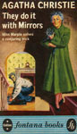
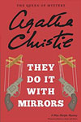
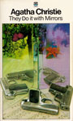
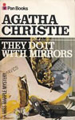
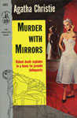
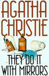
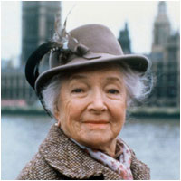
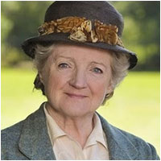

They Do It with Mirrors was first published in the US by Dodd, Mead and Company in 1952 under the title of Murder with Mirrors and in UK by the Collins Crime Club on 17 November that year under Christie's original title.
One review at the time of publication praised the essence of the plot but felt the latter half of the novel moved too slowly. A later review considered that this novel showed "Definite signs of decline." and felt the author was not entirely comfortable with the setting she described in the novel.






Screen Versions
The novel's first adaptation was the 1985 television film Murder with Mirrors with Sir John Mills as Lewis Serrocold, Bette Davis as Carrie Louise, Tim Roth as Edgar Lawson and Helen Hayes as Miss Marple.
A second adaptation was aired on 29 December 1991 in the BBC series Miss Marple starring Joan Hickson as Miss Marple. The film was basically faithful to the novel, with the exception that Alex survives the attack on his life. Also, Ruth van Rydock is present at the house when the first murder takes place and Lawson attempts to swim across the lake, and does not use a rotted boat.
A third adaptation was aired on 1 January 2010 for the fourth season of the ITV series Agatha Christie's Marple, starring Julia McKenzie as Miss Marple. This adaptation has several notable changes and additions.
Some elements of the plot were also incorporated into the 1964 film Murder Ahoy!, which starred Margaret Rutherford as Miss Marple, along with a token tribute to The Mousetrap. Instead of a sprawling Victorian estate, the delinquent boys are housed on board a retired ship called the Battledore, and they go ashore periodically to commit mischief under the direction of their criminal mastermind. Apart from these elements, however, this film is not based on any of Christie's works.



-
-
Jamie McLeod-Ross